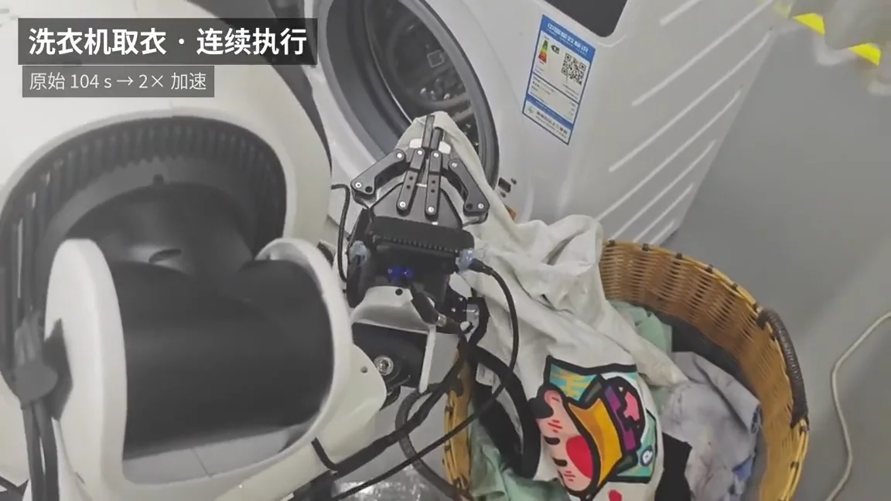
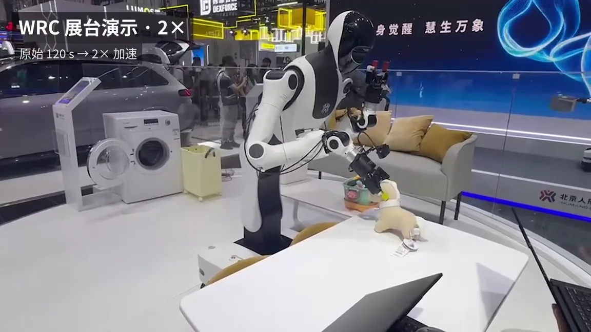

双臂 VLA 真机部署与力觉操作
在「天轶」上，我参与了从真机数据采集、π0.5 全量微调，到策略推理、动作执行和真机回归的完整流程。任务覆盖双臂衣物操作与力觉擦板。
- 单任务迭代真机轨迹
- 300–1,000
- 真机动作执行频率
- 30 Hz
- 一组擦板对比的峰值接触力
- ≈48 降至 2 N
- 真机数据与策略微调
- 优化相机视角与左右夹爪可见性，用掩膜增强图像并筛除异常轨迹。在天轶数据上全量微调 π0.5，完成叠衣和洗衣场景的真机回归。
- 实时推理与执行
- 搭建推理服务与真机客户端，加入动作限幅、顺序校验和执行日志。RTC 根据往返时延与已执行步数跳过过期动作，调整下一动作块的执行窗口。
- 力觉条件动作生成
- 对六维力/力矩历史做时序编码，与流匹配时间步融合，再经 AdaLN 调制动作专家。擦板实验对比了纯视觉基线与力觉方案，并探索插头插拔和 U 盘插入。
- WRC 导纳控制
- 参与世界机器人大会展台的传统导纳控制和真机调试，用接触反馈调节机器人运动，展示柔顺交互。



训练与部署工程细节
- 真机回归：常驻推理服务支持空闲时切换模型检查点，并同步回放多视角图像与关节曲线。
- 视觉预处理：整理了从真机视频抽帧、掩膜标注到 SegFormer 微调的流程，用于验证背景处理对 π0.5 的影响。
- 模型验证：验证 π0.6、kai0、RLToken 和 FastWAM 的相关链路。针对 DDP 下的显存瓶颈，用 FSDP 跑通 FastWAM 6B 全量微调。